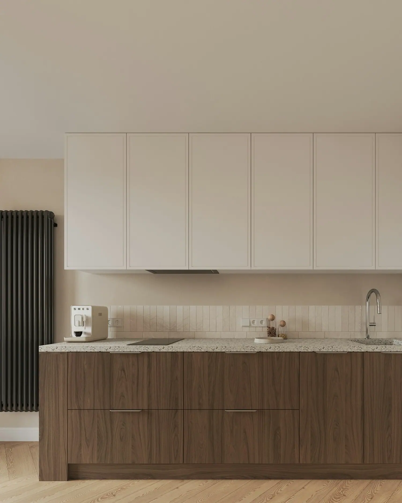
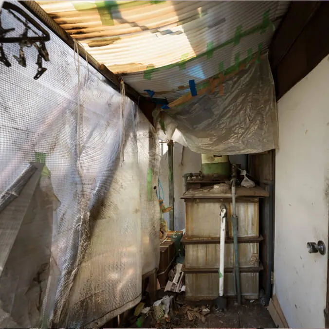
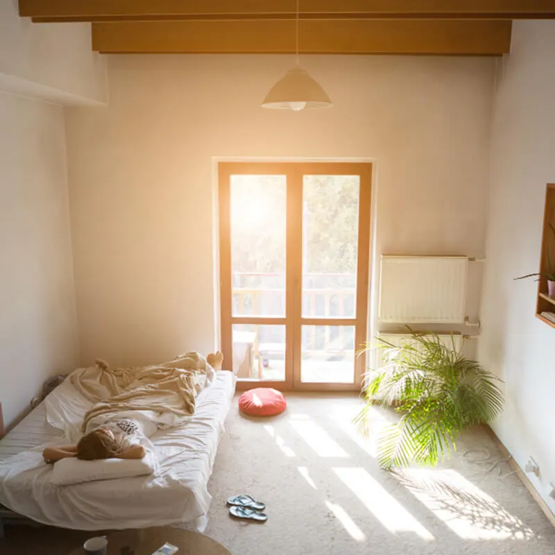

Proteção total contra pragas para sua família. Controle de pragas com atendimento rápido, equipe técnica especializada e soluções seguras para residências, condomínios e empresas. Receba uma resposta em até 24 horas.

Serviços de dedetização
Nossa equipe especializada oferece uma ampla gama de serviços de controle de pragas. Atendemos residências, condomínios e estabelecimentos comerciais, garantindo um espaço mais seguro e saudável para você e sua família.
Transformação Samurai

Imagine um lar onde cada canto pode esconder pragas indesejadas, onde cada noite é uma batalha contra intrusos que ameaçam sua saúde. Pragas como ratos, baratas e cupins não só causam desconforto, como trazem doenças e danificam a integridade da casa.

Utilizando métodos seguros e sustentáveis, transformamos espaços infestados em ambientes limpos, saudáveis e livres de pragas. Nossa tecnologia e técnicos treinados garantem que cada canto da sua casa seja seguro para você, sua família e seus animais de estimação.
Onde atendemos
Cobrimos todas as zonas da capital e também as regiões metropolitana e litorânea, com atendimento rápido e métodos seguros.
Na Baixada e no Litoral atendemos Santos, São Vicente, Guarujá, Praia Grande, Bertioga, Ubatuba, Caraguatatuba e São Sebastião, entre outras.
Contato
Receba uma resposta rápida em até 24 horas. Garantimos um atendimento personalizado e soluções rápidas para sua tranquilidade.